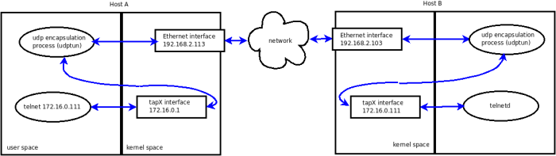

VPN Networking
Creating your own Virtual Private Network (VPN) is quite easy on platforms that come with a tun driver: this will allow you to process network packet traffic in user space. While that's considerably easier than doing your network programming in the kernel space, there still are a few details to figure out. This article should walk you through my findings.
IFF_TUN versus IFF_TAP
The tun driver is a two-in-one device:
- A point-to-point device (IFF_TUN). The TUN device allows for processing IP packets.
- An Ethernet-like device (IFF_TAP). The TAP device processes Ethernet frames.
This article discusses code written around the Ethernet device. If you choose the IP driver, then you will generate about 18 bytes per packet processed less traffic (the Ethernet header and trailer) but you will have to code a bit more to setup your network.
Activating the driver
First, we have to make sure the tun driver is active. On my Debian system, I simply have to load it:
# /sbin/modprobe tun # /sbin/lsmod | grep tun tun 10208 0 # /bin/ls -l /dev/net/tun crw-rw-rw- 1 root root 10, 200 2008-02-10 11:30 /dev/net/tun
The setup
For demo purposes, we will build a virtual network of two hosts. Once we have our hands on the Ethernet frames, we will use UDP encapsulation to transmit them from a virtual interface on host A to the virtual interface of host B and vice-versa.The UDP socket will be used un-connected; this has the advantage of using the same socket to send and receive packets from any other host in our virtual network. However, the un-connected nature of our UDP socket raises some difficulties in getting the path MTU (more on this below).
Each host in our virtual network will run an instance of the demo program. To illustrate it, the traffic from an application (here telnet) on host A to its corresponding application (inetd/telnetd) on host B will take the following path:
The discovery mechanism
In practice, we need a mechanism to map virtual IP addresses to real IP addresses. It is up to us to brew up some discovery method to resolve this mapping issue - but since this is not relevant to our topic, or for the purpose of our little demo described here, we'll cheat and pass the "map" to the tunneling program through command line parameters:
Host A# ./udptun
Usage: ./udptun local-tun-ip remote-physical-ip
Host A# ./udptun 172.16.0.1 192.168.2.103
Host B# ./udptun 172.16.0.111 192.168.2.113
Settting up the interface
The first thing we need is to create a virtual Ethernet (tap) interface. This is done with a simple open() call:
struct ifreq ifr_tun;
int fd;
if ((fd = open("/dev/net/tun", O_RDWR)) < 0) {
/*Process error, return.*/;
}
memset( &ifr_tun, 0, sizeof(ifr_tun) );
ifr_tun.ifr_flags = IFF_TAP | IFF_NO_PI;
if ((ioctl(fd, TUNSETIFF, (void *)&ifr_tun)) < 0) {
/*Process error, return.*/;
}
/*Configure the interface: set IP, MTU, etc*/
Here, the flag IFF_NO_PI requests that we manipulate raw frames. If not set, the frames will be prepended with a 4 bytes header.
Interface setup: the IP address
The virtual interface needs to be identified by an IP address. An ioctl() call will set it:
/* set the IP of this end point of tunnel */
int set_ip(struct ifreq *ifr_tun, unsigned long ip4)
{
struct sockaddr_in addr;
int sock = -1;
sock = socket(AF_INET, SOCK_DGRAM, 0);
if (sock < 0) {
/*Process error, return*/
}
memset(&addr, 0, sizeof(addr));
addr.sin_addr.s_addr = ip; /*network byte order*/
addr.sin_family = AF_INET;
memcpy(&ifr_tun->ifr_addr, &addr, sizeof(struct sockaddr));
if (ioctl(sock, SIOCSIFADDR, ifr_tun) < 0) {
/*Process error, return*/
}
/*Will be used later to set MTU.*/
return sock;
}
The Path Maximum Transmission Unit (PMTU)
The only other thing we have to set is the MTU (Maximum Transmit Unit) of the interface. For our pseudo-Ethernet interface, the MTU is largest payload that the Ethernet frames will carry. We will set the MTU based on the PMTU.
Simply stated, the PMTU is the largest packet size that can traverse the path from your host to its destination host without suffering fragmentation.
The PMTU is an important setting to get right. Consider this: upon (re)injecting your frames to the kernel, they will get a new set of headers (IP, UDP and Ethernet). Thus, if the size of the frame you send to the kernel is too close to the PMTU, the final frame that will be sent out of the real interface might be bigger than the PMTU. At worst, such a frame will be discarded somewhere "en route". At best, the frame will be split in two fragments and will generate a 100% processing overhead and some supplementary traffic.
To avoid this, we have to discover what the PMTU value is and ensure that the new Ethernet frame will be appropriately sized for the PMTU. Thus, we will subtract from the PMTU the overhead of the new set of headers and set the MTU of the virtual interface to this value.
With Linux, for a TCP socket, the task it easy: we just have to make sure the kernel mechanisms for PMTU discovery are set and we are done.
For UDP sockets though, we the users have the responsibility of ensuring the UDP datagrams are of proper size. If the UDP socket is connected to your correspondent host, a simple getsockopt() call with the IP_MTU flag set will give us the PMTU.
For unconnected sockets though, we have to probe the PMTU. First, the socket has to be set up so that datagrams are not fragmented (set the DF flag); then, we'll want to be notified of any ICMP error this might generate. If a host cannot handle the size of the datagram without fragmenting, then it will notify us accordingly (or so we hope):
int sock;
int on;
sock = socket(AF_INET, SOCK_DGRAM, 0);
if (sock < 0) {
/*Process error, return*/;
}
on = IP_PMTUDISC_DO;
if (setsockopt(sock, SOL_IP, IP_MTU_DISCOVER, &on, sizeof(on))) {
/*Process error, return*/;
}
on = 1;
if (setsockopt(sock, SOL_IP, IP_RECVERR, &on, sizeof(on))) {
/*Process error, return*/;
}
/*Use sock for PMTU discovery.*/
Next, we'll send out probe datagrams of various sizes:
int wrote = rsendto(sock, buf, len, 0,
(struct sockaddr*)target,
sizeof(struct sockaddr_in));
And finally, sift through the errors until we get the PMTU right. If we get a PMTU error, we adjust the datagram size accordingly and start sending again, until the destination is reached:
char sndbuf[VPN_MAX_MTU] = {0};
struct iovec iov;
struct msghdr msg;
struct cmsghdr *cmsg = NULL;
struct sock_extended_err *err = NULL;
struct sockaddr_in addr;
int res;
int mtu;
if (recv(sock, sndbuf, sizeof(sndbuf), MSG_DONTWAIT) > 0) {
/* Reply received. Enf of the PMTU discovery. Return.*/
}
msg.msg_name = (unsigned char*)&addr;
msg.msg_namelen = sizeof(addr);
msg.msg_iov = &iov;
msg.msg_iovlen = 1;
msg.msg_flags = 0;
msg.msg_control = cbuf;
msg.msg_controllen = sizeof(cbuf);
res = recvmsg(sock, &msg, MSG_ERRQUEUE);
if (res < 0) {
if (errno != EAGAIN)
perror("recvmsg");
/*Nothing for now, return.*/
}
for (cmsg = CMSG_FIRSTHDR(&msg); cmsg; cmsg = CMSG_NXTHDR(&msg, cmsg)) {
if (cmsg->cmsg_level == SOL_IP) {
if (cmsg->cmsg_type == IP_RECVERR) {
err = (struct sock_extended_err *) CMSG_DATA(cmsg);
}
}
}
if (err == NULL) {
/*PMTU discovery: no info yet. Return for now but keep probing.*/
}
mtu = 0;
switch (err->ee_errno) {
...
case EMSGSIZE:
debug(" EMSGSIZE pmtu %d\n", err->ee_info);
mtu = err->ee_info;
break;
...
} /*end switch*/
return mtu; /*But keep probing until remote host reached!*/
One last note: the PMTU is bound to change over time. Therefore, you'll have to retest once in a while, then set the MTU of the virtual interface accordingly. If you want to avoid this dance, you can set the MTU the "safe" but sub-optimal way: to the lesser of 576 and the MTU of the physical interface (minus the overhead we mentioned, of course.)
Interface setup: the MTU
And finally, having this magic PMTU value, we can set the MTU of our virtual interface correctly:
struct ifreq *ifr_tun;
...
ifr_tun->ifr_mtu = mtu;
if (ioctl(sock, SIOCSIFMTU, ifr_tun) < 0) {
/*Process error*/
}
UDP encapsulation
Now we have the virtual interface up and configured properly. All we have to do is to relay frames in both directions. First, open an un-connected UDP socket (I will spare you the details), then:
- read packets from the tap file descriptor and send them to the remote
physical IP of our corresponding host; this will send the packets in one
direction.
char buf[VPN_MAX_MTU] = {0}; struct sockaddr_in cliaddr = {0}; int recvlen = -1; socklen_t clilen = sizeof(cliaddr); recvlen = read(_tun_fd, buf, sizeof(buf)); if (recvlen > 0) sendto(_udp_fd, buf, recvlen, 0, (struct sockaddr*)&cliaddr, clilen);Caveat: read()ing from the tap file descriptor will block solid. What this means is that the read() call will not be interrupted in the eventuality you close the underlying file descriptor. This forces you to poll()/select() this file descriptor before read()ing from if you want to terminate this thread cleanly. - read datagrams from the UDP socket and push them through the tap file
descriptor: the data will now flow in the other direction.
recvlen = recvfrom(_udp_fd, buf, sizeof(buf), 0, (struct sockaddr*)&cliaddr, &clilen); if (recvlen > 0) write(_tun_fd, buf, recvlen);
Note that, in practice, if you have more than two hosts in your virtual network, you will have to look inside the frames for the source and destination IPs before deciding where to relay the frame.
You can download the full source for udptun.c, ttools.c, ttools.h and pathmtu.c along with the Makefile directly; all of the above are also available as a single tarball.
P as in private
Since you have full control over the traffic of the virtual network, you could encrypt it in user space. For the purpose of this demo, to build a complete VPN, we will encrypt the traffic with IPSEC (note: IPSEC also has tunnelling functionality built in).
On Debian, just install the ipsec-tools package and use these files for manual keying:
For host A:
## Flush the SAD and SPD
flush;
spdflush;
# A & B
add 172.16.0.1 172.16.0.111 ah 15700 -A hmac-md5 "123456789.123456";
add 172.16.0.111 172.16.0.1 ah 24500 -A hmac-md5 "123456789.123456";
add 172.16.0.1 172.16.0.111 esp 15701 -E 3des-cbc "123456789.123456789.1234";
add 172.16.0.111 172.16.0.1 esp 24501 -E 3des-cbc "123456789.123456789.1234";
# A
spdadd 172.16.0.1 172.16.0.111 any -P out ipsec
esp/transport//require
ah/transport//require;
spdadd 172.16.0.111 172.16.0.1 any -P in ipsec
esp/transport//require
ah/transport//require;
For host B:
## Flush the SAD and SPD
flush;
spdflush;
# A & B
add 172.16.0.1 172.16.0.111 ah 15700 -A hmac-md5 "123456789.123456";
add 172.16.0.111 172.16.0.1 ah 24500 -A hmac-md5 "123456789.123456";
add 172.16.0.1 172.16.0.111 esp 15701 -E 3des-cbc
"123456789.123456789.1234";
add 172.16.0.111 172.16.0.1 esp 24501 -E 3des-cbc
"123456789.123456789.1234";
#dump ah;
#dump esp;
# B
spdadd 172.16.0.111 172.16.0.1 any -P out ipsec
esp/transport//require
ah/transport//require;
spdadd 172.16.0.1 172.16.0.111 any -P in ipsec
esp/transport//require
ah/transport//require;
Note how the whole encryption mechanism is tied to the virtual addresses, thus isolating you from the physical networks your hosts are on. You can download the ipsec-tools.conf directly.
The VPN at work
It's show time! Let's ping the other host's virtual interface with a payload of 100 bytes:
Host A$ ping -s 100 172.16.0.111
And watch the traffic with tcpdump on the virtual interface:
#tcpdump -i tap0
...
15:43:27.739218 IP 172.16.0.1 > 172.16.0.111: AH(spi=0x00003d54,seq=0x1d):
ESP(spi=0x00003d55,seq=0x1d), length 128
15:43:27.740673 IP 172.16.0.111 > 172.16.0.1: AH(spi=0x00005fb4,seq=0x1d):
ESP(spi=0x00005fb5,seq=0x1d), length 128
15:43:28.738741 IP 172.16.0.1 > 172.16.0.111: AH(spi=0x00003d54,seq=0x1e):
ESP(spi=0x00003d55,seq=0x1e), length 128
15:43:28.740170 IP 172.16.0.111 > 172.16.0.1: AH(spi=0x00005fb4,seq=0x1e):
ESP(spi=0x00005fb5,seq=0x1e), length 128
15:43:39.494298 IP 172.16.0.1 > 172.16.0.111: AH(spi=0x00003d54,seq=0x1f):
ESP(spi=0x00003d55,seq=0x1f), length 64
15:43:39.496818 IP 172.16.0.111 > 172.16.0.1: AH(spi=0x00005fb4,seq=0x1f):
ESP(spi=0x00005fb5,seq=0x1f), length 40
On the physical interface:
# tcpdump -i eth2
...
15:45:46.878156 IP 192.168.40.128.11223 > 192.168.40.129.11223: UDP,
length 186
15:45:46.879021 IP 192.168.40.129.11223 > 192.168.40.128.11223: UDP,
length 186
15:45:47.879479 IP 192.168.40.128.11223 > 192.168.40.129.11223: UDP,
length 186
15:45:47.887054 IP 192.168.40.129.11223 > 192.168.40.128.11223: UDP,
length 186
15:45:48.880268 IP 192.168.40.128.11223 > 192.168.40.129.11223: UDP,
length 186
15:45:48.882738 IP 192.168.40.129.11223 > 192.168.40.128.11223: UDP,
length 186
All figures in bold are payloads. When it goes out of the virtual interface, the encrypted datagram is 186 bytes: 14 bytes the Ethernet header, 20 bytes the IP header, an AH header of 24 bytes, and ESP as the remaining 128 bytes.
When it goes out of the physical interface, the datagram is 232 bytes: 14 bytes for the Ethernet header, 20 bytes for the IP header, 8 for the UDP one, 186 bytes of payload and 4 bytes for the Ethernet trailer. Thus, we introduce a 46 byte overhead per datagram.
Resources
- The TUN/TAP kernel documentation
- The Path MTU Discovery RFC
- The Linux IPv4 man page
- The RFC Sourcebook
Talkback: Discuss this article with The Answer Gang
![[BIO]](../gx/authors/melinte.jpg)
Aurelian is a software programmer by trade. Sometimes he programmed Windows, sometimes Linux and sometimes embedded systems. He discovered Linux in 1998 and enjoys using it ever since. He is currently settled with Debian.